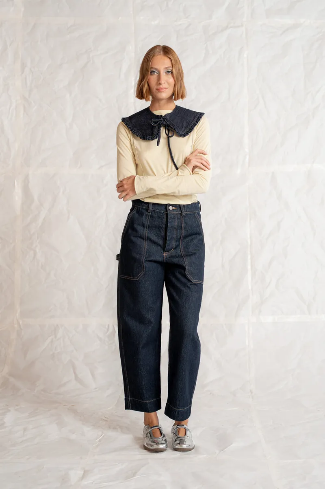
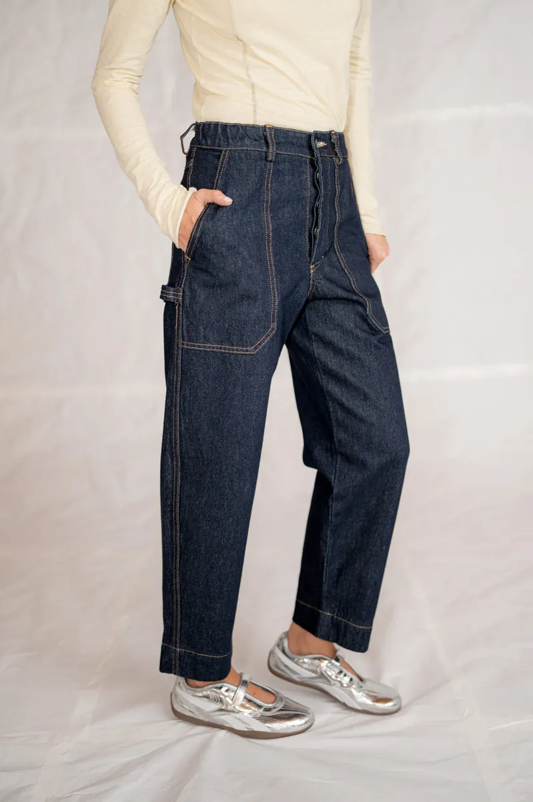
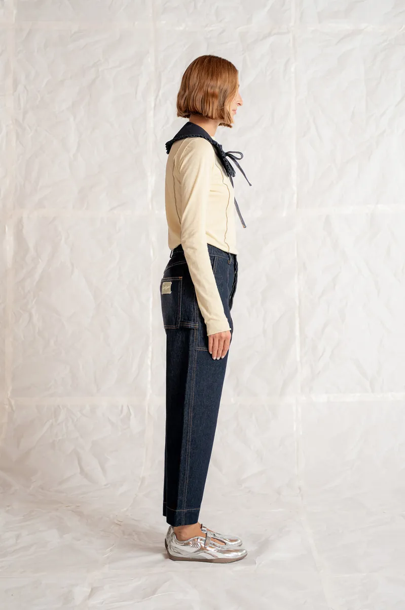
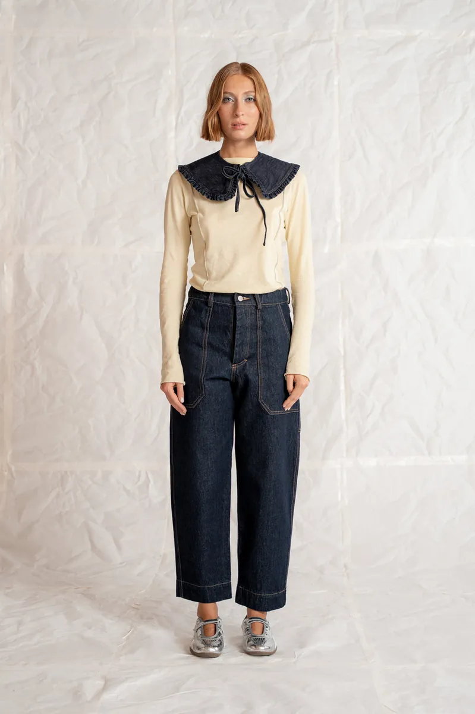
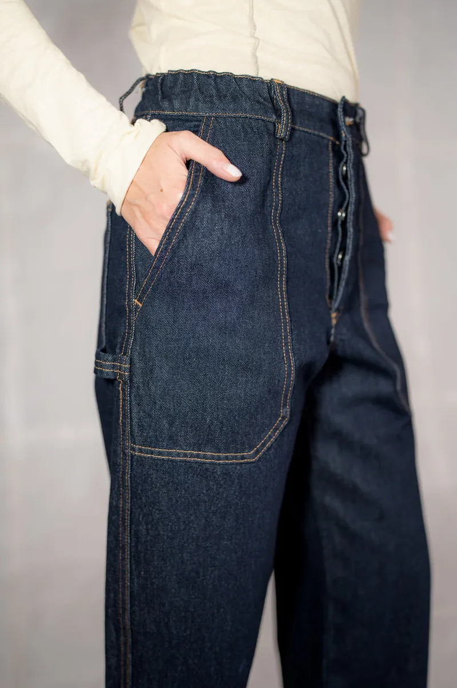

Home / Pantaloni e salopette / Jeans Apollo in cotone biologico con elastico in vita





Jeans Apollo Blu Indaco
Cotone biologico GOTS · elastico in vita
4,90 · 429 recensioni89,00 € IVA inclusa
Vestibilità comoda · vita all'ombelico · risvolto di 5 cm · Guida taglie
Spedito in 3–5 gg lavorativi · gratis sopra 99 € in Italia (altrimenti 5 €) · cambio taglia gratuito in Italia entro 14 giorni · reso entro 14 giorni · carte e PayPal
Il jeans da lavoro che si porta tutti i giorni: vita elastica, gamba ampia che si stringe appena in fondo, tasca utility sul fianco e passante per gli attrezzi.
- Due tasche laterali, una posteriore, una tasca utility sul fianco e un passante porta-attrezzi
- Vita elasticizzata all'altezza dell'ombelico, chiusura con patta a bottoni
- Orlo pensato per un risvolto di 5 cm: si porta con o senza
- Bottoni e minuterie in metallo senza nichel
Tessuto, taglie e cura
| Tessuto | denim 14 oz, 100% cotone biologico |
|---|---|
| Certificazioni | GOTS · GRS |
| Finissaggio | pre-lavato e ammorbidito |
| Vestibilità | comoda, gamba ampia leggermente affusolata |
| Taglie | XS – XXL |
| Lavaggio | a rovescio a 30 °C con colori simili, carico ridotto i primi 4 lavaggi |
| Asciugatura | asciugatrice a media intensità |
| Stiro | temperatura media, non sull'etichetta |
Cosa dicono i clienti
4,90